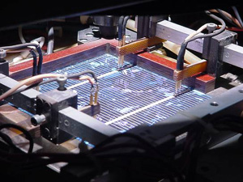

Silver Resistance Test

Following the firing of the silver screen-printed contact, a simple test involving the voltage drop along a silver metal finger can be performed to give a good indication of the resistive losses within the silver metal contact. The cell is placed under the solar simulator as shown above and contacted by the test probes so as to put the cell in short circuit conditions. This causes the maximum photogenerated current to flow within the silver metal lines, therefore maximising the resistive losses as all the current generated around the edge of the cell has to travel along the metal lines to reach the busbar. A multimeter set on DC voltage can then be used to measure the voltage difference between one of the busbars and the metal line that runs along the edge of the cell in the direction parallel to both the busbar and the cell edge. For most commercial cells (that are typically 12.5cm X 12.5cm), the separation between these two measurement points is about 3cm. In a good cell with low resistive losses, this voltage measurement may be as low as below 20mV, while in a cell with poor conductivity in the metal, this voltage drop may be as high as 100mV. For the latter, if the cell would normally be expected to have a maximum power point voltage (Vmp) of 500mV, such a high resistive loss along the metal fingers could cause the Vmp to fall to approximately 400-450mV, representing a fillfactor loss somewhere in the range of 10-20%.